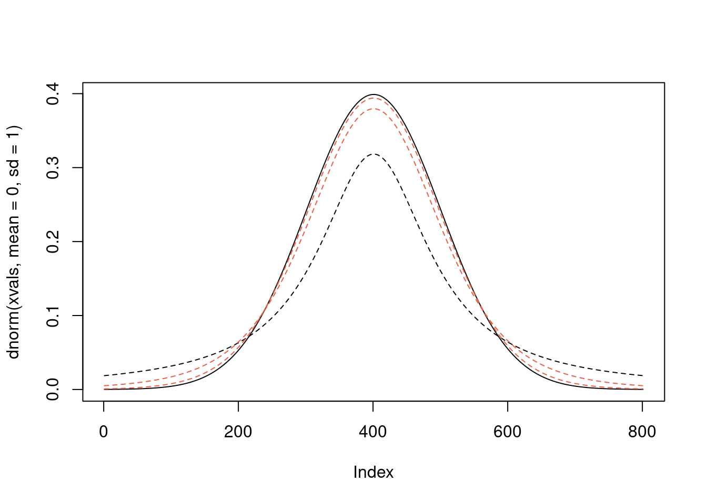
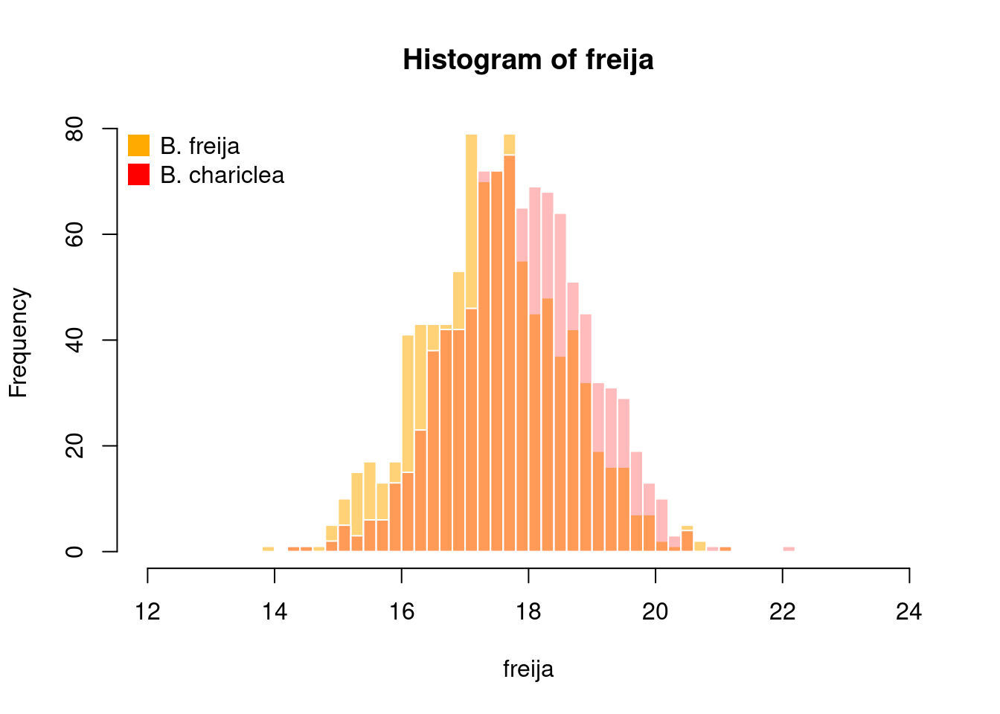
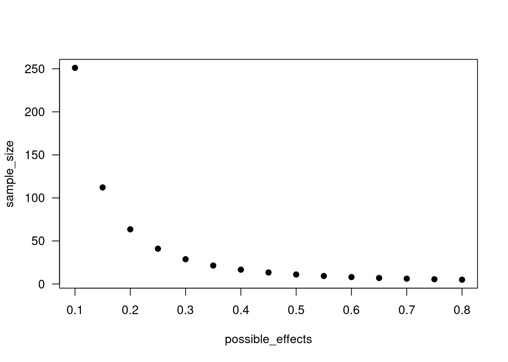

3 Null hypothesis significance testing
Conventionally in statistics, people use a threshold (\(\alpha\)) of 0.05 to denote statistical significance. If the probability of observing your data, or data more extreme, is less than the threshold you set, you reject the null hypothesis. This is why you so often see things like \(p < 0.05\) in the results section of papers (particularly in older papers, i.e. when you needed a lookup table). Conversely, if your p-value is greater than \(\alpha\), you fail to reject the null hypothesis. You never accept your hypothesis, and you never accept the null hypothesis. You just fail, or do not fail, to reject the null.

Why do we conventionally use \(\alpha = 0.05\) as a threshold?
“The value for which P=.05, or 1 in 20, is 1.96 or nearly 2; it is convenient to take this point as a limit in judging whether a deviation is to be considered significant or not. Deviations exceeding twice the standard deviation are thus formally regarded as significant.” - Fisher (1925)
3.1 A brief history of statistics and eugenics
There are many figures in ecology and evolutionary biology that were giants in their field and helped shape modern science, and who were also extremely problematic individuals (and not just because ‘it was a different time’). Often, the way we learn about these individuals is first through their contributions to the field, and secondarily that they were a ‘bad person’ but that we should still value their intellectual contributions and somehow consider those to be separate from the person. For example, John James Audubon made numerous contributions to ornithology, and also bought and sold enslaved people. You could argue that those are separate aspects of the same person (…you could also argue that he greatly benefited from his status in society as a result of oppressing and enslaving other people and that enabled him to contribute to ornithology, but that is a conversation for a different course…). This is not the case with statistics. Most of modern statistics is built on work done by Sir Francis Galton, Karl Pearson, and Ronald Fisher, all of whom were staunch advocates of eugenics. They also collectively developed the ideas of standard deviation, correlation, regression to the mean, the correlation coefficient, method of moments, \(\chi^2\) test, p-values, principle components analysis, and many other fundamental ideas in statistics. The point is not that these men made exceptional contributions to statistics and also happened to be eugenicists, but rather that they developed statistics to support their eugenicist viewpoints. After all, who could argue with the data they showed to support their view that other races were inferior to white Europeans?

Many of the concepts we still use to this day in statistics come out of this tradition. For example, even the idea that a population (in the statistical sense) can be described from a single distribution is rooted in eugenics. At the same time Pearson was writing about mixtures of ‘homogeneous groups’ from a mathematical perspective, he was also advocating for colonialism and destruction of what he considered to be ‘inferior races’ because a more ‘homogeneous’ society was better.
The specific values, thresholds, cutoffs, and conventions that underlie most of null hypothesis significance testing were developed to support a eugenicist agenda. Always remember that they are not mathematically justified or ordained by some law of nature, but rather prescribed by a handful of like-minded eugenicists over a century ago. You should not feel bad about “breaking” their rules from time to time. Also, statistics is constantly evolving, so there are no hard and fast rules to follow.
3.2 T-distribution and t-tests
With Z-scores, we are assuming an infinite sample size when we use the standard deviation in the denominator. This is never the case with real data, though as our sample size increases, it becomes less and less important. To account for the reality of small sample sizes, often researchers will use the t distribution instead. The t distribution was developed by William Sealy Gosset, a brewer at Guinness, who essentially wanted to quality check different batches of beer with statistics, but could not use the normal distribution because of the small sample sizes. He published it under the pseudonym Student, which is why it is now called Student’s t-test.
# create an object of xvalues over a reasonable range to plot
xvals <- seq(from=-4, to=4, by=0.01)
# plot the standardized normal (z) distribution over this range
plot(dnorm(xvals, mean=0, sd=1), type="l")
# use the lines() function to add a line with the t distribution over the same range
# and assume we have 1 degree of freedom (i.e. a sample size of 2, where df = n - 1)
lines(dt(xvals, df=1), lty=2)
# as you increase the sample size, and hence the degrees of freedom, the t distribution
# approaches, but never reaches, normal (though for most purposes, anything with
# a sample size >20 is probably fine to assume normality if it is generally normally
# distributed and meets other assumptions)
lines(dt(xvals, df=5), lty=2, col="tomato2")
lines(dt(xvals, df=20), lty=2, col="tomato2")
We will not spend much time on t-tests because quite frankly they are rarely useful in ecology (and the internet is chock-full of advice), but they can be useful if you want to know if two groups are different from each other.

3.2.1 Butterfly wing size
Let’s say we have two species of butterflies, and we want to know if there is a significant difference in their forewing length. The data we are using for this example come from Daly et al. (2024), who found that warming temperatures can affect development and eventual body size of Arctic butterflies. Here, we are not replicating their full analysis - we are just going to use the data to test if Boloria chariclea is larger than Boloria freija (a fascinating question, I know…).

Because we are working with external data, we need to get it into our environment. There are many different ways to import data depending on the type of file you are reading. In this case, I have exported their data from Dryad and converted it to a comma separated value (.csv) file.
Future proofing your data files: When you can use .csv, it is highly, highly recommended because it is future proofed meaning it can be opened by any text editor (unlike e.g. .xlsx). There are of course other options for reading in things like tab-delimited files with
read.delim()or Excel spreadsheets withreadxl::read.xlsx()and so on, but a simple .csv is the way to go when possible.
First, we should read in the data into our environment. Then, it is generally a good idea to explore your data to see what you are working with. The function head will show you, by default, the first six elements of an object (in this case, the first six rows because our object is of the class data.frame). The function colnames will give you the column names (rownames will give you the names of rows). It is also a good idea to look at the structure of your data with the str function which gives you a quick overview of what is contained in the object. For example, with this data, it will tell us we have 2501 observations (i.e. rows of data) of 19 variables (i.e. our columns). It will also tell us all the column names, what type of data are contained in the column (e.g. year is an integer, species is a character, etc.), and give a preview of the first few items in each column.
# read in the spreadsheet to our environment
dat <- read.csv("./data/daly2024_butterflysize.csv")
# note that if you have an internet connection, you can also read in data from
# remote sources. e.g. I uploaded this spreadsheet as a publicly available
# .csv via Google Sheets and you could read it in from there instead of from
# a local archive
dat <- read.csv("https://tinyurl.com/daly2024")
# look at the first few rows of data
head(dat)## year barcode box.barcode box envelope Species.determined.by
## 1 1971 UAM100190600 C87023 53-01 UAM100190576 Jayce B. Williamson
## 2 1971 UAM100190625 C87023 53-01 UAM100190573 Jayce B. Williamson
## 3 1971 UAM100190626 C87023 53-01 UAM100190573 Jayce B. Williamson
## 4 1971 UAM100190627 C87023 53-01 UAM100190573 Jayce B. Williamson
## 5 1971 UAM100190639 C87023 53-01 UAM100190570 Jayce B. Williamson
## 6 1971 UAM100190640 C87023 53-01 UAM100190561 Jayce B. Williamson
## species length measurer region sex
## 1 Boloria chariclea 18.70 Abby Blackstone W M
## 2 Boloria chariclea 16.50 Elizabeth Himschoot W M
## 3 Boloria chariclea 16.48 Elizabeth Himschoot W M
## 4 Boloria chariclea 16.41 Elizabeth Himschoot W M
## 5 Boloria chariclea 16.70 Elizabeth Himschoot W M
## 6 Boloria chariclea 18.16 Elizabeth Himschoot W M
## Previous.Summer.Station Spring.weather.station extrap_station extrap_gdd0
## 1 brrw brrw brrw.nk.ko.at 917.7636
## 2 brrw brrw brrw.nk.ko.at 917.7636
## 3 brrw brrw brrw.nk.ko.at 917.7636
## 4 brrw brrw brrw.nk.ko.at 917.7636
## 5 brrw brrw brrw.nk.ko.at 917.7636
## 6 brrw brrw brrw.nk.ko.at 917.7636
## extrap_gdd5 flight_doy_cutoff prev_summer_gdd spring_gdd
## 1 679.3685 180 61.66 20.28
## 2 679.3685 180 61.66 20.28
## 3 679.3685 180 61.66 20.28
## 4 679.3685 180 61.66 20.28
## 5 679.3685 180 61.66 20.28
## 6 679.3685 180 61.66 20.28## [1] "year" "barcode"
## [3] "box.barcode" "box"
## [5] "envelope" "Species.determined.by"
## [7] "species" "length"
## [9] "measurer" "region"
## [11] "sex" "Previous.Summer.Station"
## [13] "Spring.weather.station" "extrap_station"
## [15] "extrap_gdd0" "extrap_gdd5"
## [17] "flight_doy_cutoff" "prev_summer_gdd"
## [19] "spring_gdd"## 'data.frame': 2501 obs. of 19 variables:
## $ year : int 1971 1971 1971 1971 1971 1971 1971 1971 1971 1971 ...
## $ barcode : chr "UAM100190600" "UAM100190625" "UAM100190626" "UAM100190627" ...
## $ box.barcode : chr "C87023" "C87023" "C87023" "C87023" ...
## $ box : chr "53-01" "53-01" "53-01" "53-01" ...
## $ envelope : chr "UAM100190576" "UAM100190573" "UAM100190573" "UAM100190573" ...
## $ Species.determined.by : chr "Jayce B. Williamson" "Jayce B. Williamson" "Jayce B. Williamson" "Jayce B. Williamson" ...
## $ species : chr "Boloria chariclea" "Boloria chariclea" "Boloria chariclea" "Boloria chariclea" ...
## $ length : num 18.7 16.5 16.5 16.4 16.7 ...
## $ measurer : chr "Abby Blackstone" "Elizabeth Himschoot" "Elizabeth Himschoot" "Elizabeth Himschoot" ...
## $ region : chr "W" "W" "W" "W" ...
## $ sex : chr "M" "M" "M" "M" ...
## $ Previous.Summer.Station: chr "brrw" "brrw" "brrw" "brrw" ...
## $ Spring.weather.station : chr "brrw" "brrw" "brrw" "brrw" ...
## $ extrap_station : chr "brrw.nk.ko.at" "brrw.nk.ko.at" "brrw.nk.ko.at" "brrw.nk.ko.at" ...
## $ extrap_gdd0 : num 918 918 918 918 918 ...
## $ extrap_gdd5 : num 679 679 679 679 679 ...
## $ flight_doy_cutoff : int 180 180 180 180 180 180 180 180 180 180 ...
## $ prev_summer_gdd : num 61.7 61.7 61.7 61.7 61.7 ...
## $ spring_gdd : num 20.3 20.3 20.3 20.3 20.3 ...# notice that different columns in the data.frame have different data types
# e.g. year is an integer, species is a character (chr), previous summer growing
# degree days (prev_summer_gdd) is numeric, etc.But, back to the main point here: doing a quick t-test to see if the two species are different sizes. First, let’s ask the question “Are Boloria chariclea and Boloria freija significantly different in size?”. Notice here that we do not specify which is larger - just that they are different.
# create a vector of only the sizes (length) of B freija
# and the same for chariclea
freija <- dat$length[dat$species=="Boloria freija"]
chariclea <- dat$length[dat$species=="Boloria chariclea"]
# use a t-test to test if they are different
t.test(freija, chariclea)##
## Welch Two Sample t-test
##
## data: freija and chariclea
## t = -8.4521, df = 1895.9, p-value < 2.2e-16
## alternative hypothesis: true difference in means is not equal to 0
## 95 percent confidence interval:
## -0.5197503 -0.3239729
## sample estimates:
## mean of x mean of y
## 17.46234 17.88420For identification purposes, it is potentially good to know that the species can be distinguished by size. But imagine telling a field technician that they can tell them apart because they are different sizes. The first question they will ask is which one is bigger.
# plot the distribution of sizes for the two species side by side
hist(freija, col="#ffaa0088", # you can specify colors in RGB format, including opacity
border=F,
xlim=c(12, 24), # in case the other species needs more room on the axis
breaks = 50)
hist(chariclea, col="#ff000044", border=F,
add=T, # add it to the current plot set to TRUE
breaks=50)
# add a legend to remind ourselves which color is which
legend("topleft", # placement
legend=c("B. freija", "B. chariclea"), #text
col=c("#ffaa00", "#ff0000"), # colors
pch=15, # character
bty="n", # i do not like boxes
pt.cex=2)
Earlier, we did a two-tailed t-test with an \(\alpha\) of 0.05, meaning we only cared if the probability of observing the difference in size that we observed, or an even greater difference, was less than 5%, if the null hypothesis that there was no difference in size was true. But, we could also do a one-tailed test, which would help us answer the question: Is Boloria chariclea larger than Boloria freija? Here, we introduce the idea that we only care about one side (the upper tail) of the t-distribution, not the lower.
# NOTE: it matters which species is x and which is y! In this line, we are asking if
# chariclea is larger than freija, and the result is yes
t.test(x = chariclea, y = freija, alternative = "greater")##
## Welch Two Sample t-test
##
## data: chariclea and freija
## t = 8.4521, df = 1895.9, p-value < 2.2e-16
## alternative hypothesis: true difference in means is greater than 0
## 95 percent confidence interval:
## 0.3397231 Inf
## sample estimates:
## mean of x mean of y
## 17.88420 17.46234# but, if we ask in a one-sided test if freija is larger than chariclea, it is no
t.test(x = freija, y = chariclea, alternative = "greater")##
## Welch Two Sample t-test
##
## data: freija and chariclea
## t = -8.4521, df = 1895.9, p-value = 1
## alternative hypothesis: true difference in means is greater than 0
## 95 percent confidence interval:
## -0.5040001 Inf
## sample estimates:
## mean of x mean of y
## 17.46234 17.88420There are also paired t-tests in which you have a paired set of observations of one thing, and you want to know if they as a group differ from a paired set of observations of another thing. To do this, add the argument paired=T to the t.test function, but each of your vectors will need to actually be paired (i.e. identical length).
With our Boloria data, let’s say for some reason we wanted to know if the mean size of Boloria chariclea was larger than Boloria freija every single year in the study, and we wanted to do the comparisons year by year. Not a very sensible question to ask from a biological perspective unless we thought that there were large differences across years, but that’s our example data this week, so we will go with it.
First, we will need to do some data wrangling to get our data into the format we want. What we want is a mean value for each year for each species. We can use the aggregate function for this. There are also tidyverse ways to group and summarize data, which we will not talk about in this course because I prefer base.
# don't forget you can look up what arguments a function expects with ?
mean_wts <- aggregate(length ~ year + species, data=dat, FUN=mean)
# this gives us the mean for each species in each year, but we want it in a
# format where each row contains observations for comparison; we can move it to
# this form with the xtabs function
yearly_wts <- xtabs(length ~ ., data=mean_wts)
# now we have vectors of the same length for comparison with a paired t-test
# note you do not always need these steps, it depends on your data structure
t.test(yearly_wts[,1], yearly_wts[,2], paired=T, alternative = "greater")##
## Paired t-test
##
## data: yearly_wts[, 1] and yearly_wts[, 2]
## t = 0.35052, df = 14, p-value = 0.3656
## alternative hypothesis: true difference in means is greater than 0
## 95 percent confidence interval:
## -2.307567 Inf
## sample estimates:
## mean of the differences
## 0.5733311A more practical example of where I’ve used this is to test if there have been phenological shifts in the week of last flight for moths in Ithaca. Each species is only represented once in the historical data, and once in the current data. To see if the whole community is flying later, we used a paired t-test because that way each species was matched up with its own data point historically and now, rather than having a lumped distribution of data historically and a lumped distribution currently. Or, perhaps you have a before and after experimental design setup and want to know if your experimental units have changed in response to a treatment. For example, you have 20 streams and you measure their invertebrate species richness, then introduce standing deadwood to the streams and want to know how it changed the invertebrate community. You do not want to compare the streams to each other - you want to compare each to their previous invertebrate community, so you have pairwise samples.
3.3 ANOVA
What if instead of comparing two groups, we wanted to compare three or more groups? That’s called an analysis of variance (ANOVA).
The dataset we read in earlier actually has three different species and also includes Colias hecla. For no real scientific reason whatsoever, we will ask the question: are these three butterfly species different in size?
# we use the aov function, and here we will specify our data a bit differently
# instead of putting in two separate species vectors, we will use the tilde ~
# to indicate that we want to model the response variable (length) over the
# categorical groups (species) in our dataset (dat)
size_mod <- aov(length ~ species, data = dat)
# we saved this output to an object, because typically you want to actually be
# able to work with your model output, not just run it once and do nothing
# the summary() function applied to the model will give us the results
summary(size_mod)## Df Sum Sq Mean Sq F value Pr(>F)
## species 2 10964 5482 4086 <2e-16 ***
## Residuals 2497 3350 1
## ---
## Signif. codes: 0 '***' 0.001 '**' 0.01 '*' 0.05 '.' 0.1 ' ' 1
## 1 observation deleted due to missingnessThe model summary tells us that there are significant differences between the three species, but do we know if that’s because one is much bigger (or smaller) than the others, or that they are all different from each other. To see what differences resulted in a significant difference in the overall model, we can use Tukey’s Honestly Significant Differences, which will give us the difference between the groups, the lower and upper bound of the difference, and the p-value associated with that difference. Note that if the lower and upper bounds of the difference overlap zero, then we would not know if there was a difference between the two groups. That is another way to think about p-values and significance (assuming 0 difference is your null hypothesis). These upper and lower values are confidence intervals.
## Tukey multiple comparisons of means
## 95% family-wise confidence level
##
## Fit: aov(formula = length ~ species, data = dat)
##
## $species
## diff lwr upr p adj
## Boloria freija-Boloria chariclea -0.4218616 -0.5462763 -0.297447 0
## Colias hecla-Boloria chariclea 4.6964363 4.5547907 4.838082 0
## Colias hecla-Boloria freija 5.1182979 4.9758238 5.260772 03.4 Type I and Type II error
When doing null hypothesis significance testing (NHST) with different thresholds of \(\alpha\), remember that we only either reject or fail to reject the null. But, we also know that our p-values are the probability of observing our data, or data more extreme, if the null were true. This means that there is always a non-zero chance of observing your data and rejecting the null even if the null is true. If we reject the null when it is true, this is a false positive (i.e. we have identified a relationship or difference in our data that does not actually exist) or a type I error. The probability of making a type I error is our \(\alpha\) threshold. When setting a threshold for \(\alpha\), what we are really asking ourselves is ‘what probability am I okay with as an upper bound for claiming something is true when it is not?’ Conversely, a type II error is when we fail to reject the null even though the null is false (i.e. a false negative, we say there is no difference when there really is). The probability of making a type II error is denoted \(\beta\) and represents the chance that we will miss an association or effect that truly exists. \(1 - \beta\) is the ‘power’ of our test.

When planning research, it is helpful to know if you will likely be able to detect the effect that you expect exists in the population, which partly depends on sample size. Power analysis is an approach to estimate what sample size you will need, what effect is possible to detect with your data, or what power you have to detect an observed effect given your data. Note that the last one is typically done post-hoc to ‘explain’ negative results and is bad scientific practice; do not do post-hoc power analyses. For t-tests, there is a built-in function in R to do power analysis called power.t.test. Using this function, what is the chance, given our data, that we will make a type II error when comparing Boloria chariclea to B. freija wing length?
N <- nrow(dat)/2
sd <- sd(dat$length)
alpha <- 0.05
meandiff <- mean(dat$length[dat$species=="Boloria chariclea"], na.rm=T) - mean(dat$length[dat$species=="Boloria freija"], na.rm=T)
power.t.test(n = N, delta = meandiff, sig.level = alpha)##
## Two-sample t test power calculation
##
## n = 1250.5
## delta = 0.4218616
## sd = 1
## sig.level = 0.05
## power = 1
## alternative = two.sided
##
## NOTE: n is number in *each* group# What if we only sampled 20 individuals of each species?
power.t.test(n = 20, delta = meandiff, sig.level = alpha)##
## Two-sample t test power calculation
##
## n = 20
## delta = 0.4218616
## sd = 1
## sig.level = 0.05
## power = 0.2547824
## alternative = two.sided
##
## NOTE: n is number in *each* groupPower analysis can be especially useful if you are doing destructive or lethal sampling because you can use it to estimate the minimum number of samples or individuals you need to sacrifice to detect different thresholds. For instance, let’s say we were collecting hummingbirds from high elevation and low elevation sites, bringing them to a common location, measuring their metabolic rates, and then sacrificing them to weigh their internal organs. Naturally, we would want to sacrifice as few individuals as possible. If we wanted 80% power to detect an effect size difference of 0.2 between individuals from low and high elevation sites with a probability of a false positive of 5%, how many hummingbirds would we need? What if we weren’t sure about the effect and we thought it might be between 0.1 and 0.8?
possible_effects <- seq(0.1, 0.8, by=0.05)
sample_size <- c()
for(i in 1:length(possible_effects)){
power1 <- power.t.test(n = NULL, delta=possible_effects[i], sd=1, sig.level=0.05, power=0.20)
sample_size[i] <- power1$n
}
plot(sample_size ~ possible_effects, pch=19, las=1)